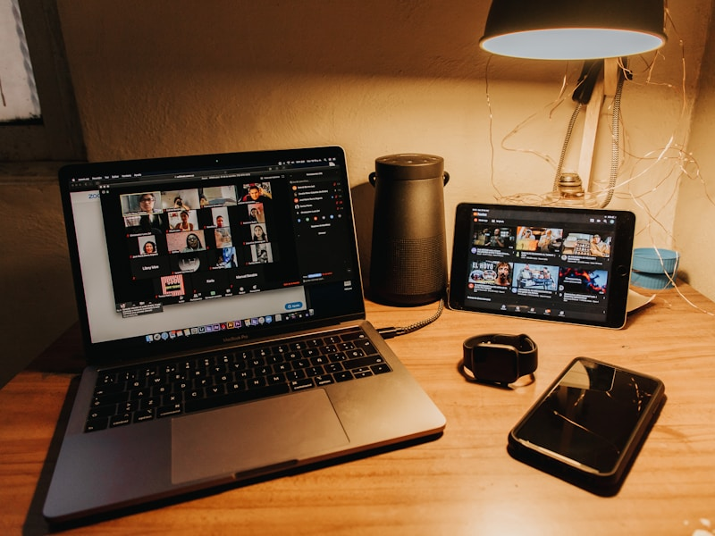

DeskRT 专有编解码器，60fps 超低延迟
仅需 3.5MB 超小体积即可实现流畅远程控制体验
支持 Windows / macOS / Linux / Android / iOS 全平台

v8.1.2 最新版全球下载量
覆盖国家和地区
企业客户信赖
流畅画面帧率
下载、安装、连接，三步即可完成远程访问
点击下载按钮，获取 Windows 安装包（仅 3.5MB）
双击安装包，快速完成安装并启动程序
输入对方的 9 位 AnyDesk 地址，即可发起连接
连接成功后即可远程操控对方电脑，如同本地操作
专为高效远程协作打造的八大核心功能
自研 DeskRT 编解码器，60fps 流畅画面，本地般的操控体验
TLS 1.2 加密 + RSA 2048 密钥交换，数据传输安全无忧
支持 Windows/macOS/Linux/Android/iOS 等 10+ 平台互联
直接拖拽文件即可传输，无需复杂设置，方便快捷
预设密码即可实现无人值守访问，7×24 小时随时连接
完整录制远程会话过程，回放审计，满足合规要求
远程唤醒休眠电脑，节省能源的同时随时远程访问
一键开启隐私模式，远程时隐藏本地屏幕，保护隐私
无论是远程办公还是技术支持，AnyDesk 都能完美胜任


您可能想了解的问题，我们一一为您解答
AnyDesk 提供免费版本供个人非商业使用。如果您需要商业用途，可以选择专业版、标准版、高级版或企业版。免费版包含基本的远程桌面功能，适合个人学习和小规模使用。
AnyDesk 采用银行级别的安全标准，包括 TLS 1.2 加密协议和 RSA 2048 密钥交换技术。软件已通过 ISO 27001 认证，符合 GDPR 数据保护法规要求，确保您的远程会话安全可靠。
在远程电脑上设置无人值守访问密码（仅专业版及以上支持）。设置完成后，您只需输入该电脑的 AnyDesk 地址和预设密码，即可随时远程连接，无需对方在线确认。
AnyDesk 支持 Windows、macOS、Linux、Android、iOS、Chrome OS、Raspberry Pi 和 Apple TV 等平台。您可以在任何主流设备间建立远程连接，实现真正的跨平台协作。
AnyDesk 采用自研的 DeskRT 编解码器，在低带宽下也能保持流畅。如果您遇到卡顿，可以尝试：1) 关闭其他占用带宽的应用；2) 在连接设置中降低画质；3) 确保网络稳定。
AnyDesk 支持多种文件传输方式：1) 直接拖拽文件到远程桌面窗口；2) 使用文件管理器功能浏览和传输；3) 共享剪贴板内容。传输速度快且安全可靠。
您可以通过点击页面上的下载按钮，跳转到 anydesk.com 官方下载页面获取最新版本。我们始终建议从官网下载，以确保软件的安全性和最新功能。
您可以访问 AnyDesk 官网联系页面获取技术支持。企业版用户享有专属技术支持通道。如有购买相关问题，也可以通过官网了解各版本的详细定价和功能对比。
听听全球用户对 AnyDesk 的评价
"作为 IT 运维工程师，我每天需要远程管理数十台服务器。AnyDesk 的速度和稳定性让我印象深刻，比 TeamViewer 快多了，而且价格也更实惠。"
"疫情期间居家办公全靠 AnyDesk 和同事保持协作。它的 DeskRT 技术真的很厉害，即使我家网络不太好，远程控制公司电脑也很流畅。"
"我们公司部署了 AnyDesk 企业版来管理全国连锁门店的收银系统。集中管理功能很强大，IT 团队的工作效率提升了好几倍。"